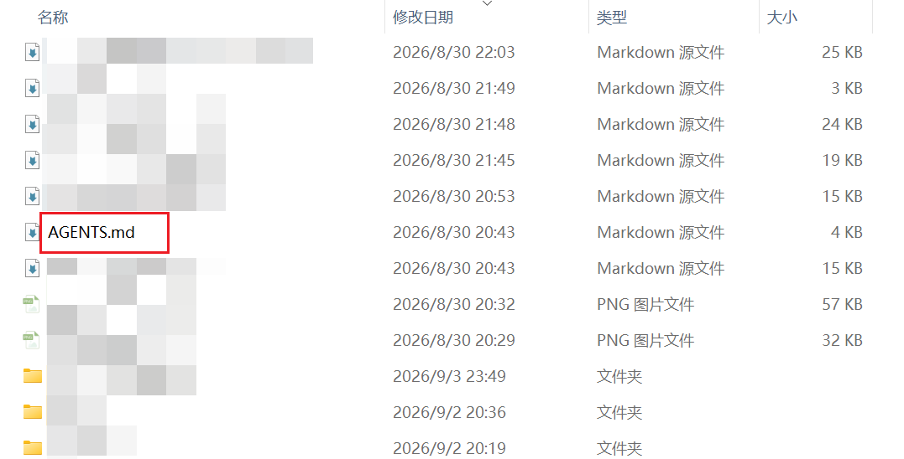
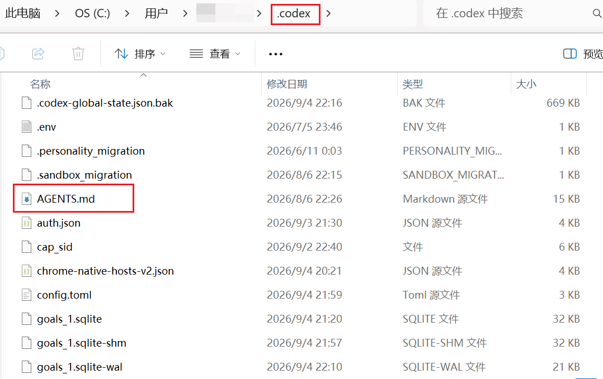
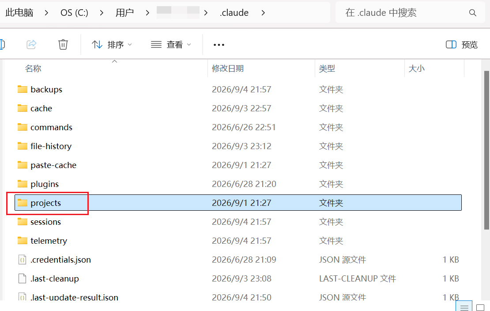
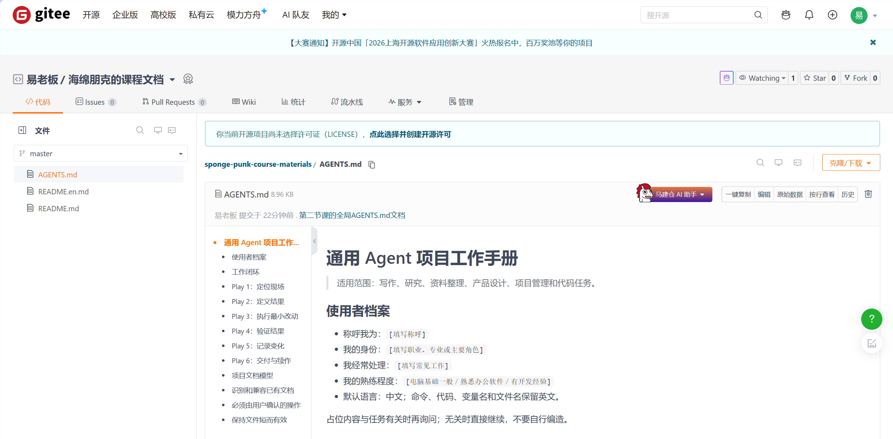
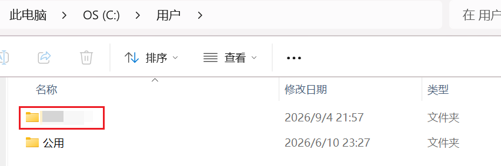
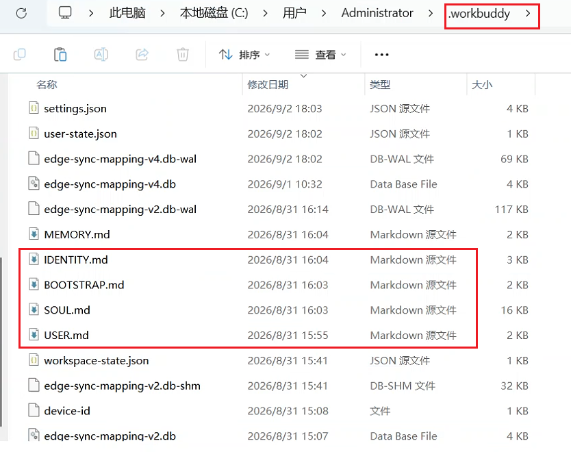
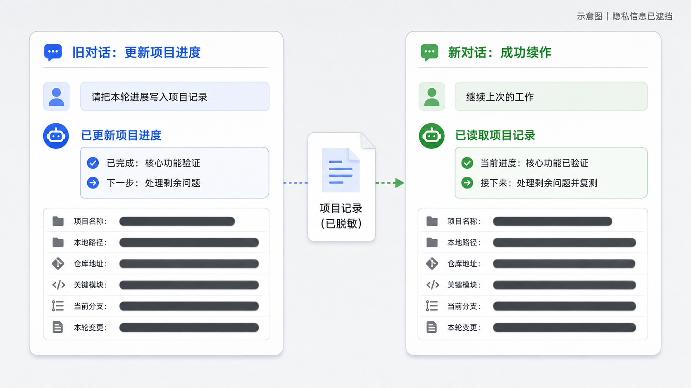

展开本页目录
本页已完整同步飞书课程修订号 482 的正文与公开图片，无需登录飞书即可阅读。飞书原文仅作为来源与版本核对入口。
查看飞书来源 ↗课程编号：HP-S1-L02
状态：内容初稿，产品路径尚未完成 Windows 实测，不可发布
从一个真实任务开始，让 AI 把事情做完。
上一篇文章，我介绍了普通人应该怎样选择 Agent 工具。
但选对工具只是第一步。真正开始做长期项目以后，你还要解决另一个问题：怎样让 Agent 在一次次新对话、不同工具和持续迭代中，始终知道这个项目是什么、已经做到哪里，以及接下来应该怎样做。
🎯 这节课你会学到什么
学完这节课，你会知道：
- 为什么对话越来越长以后，Agent 容易漏掉要求、答非所问，甚至出现大家常说的“降智”；
- 为什么新开对话可以让 Agent 回到更干净的上下文，却不会自动带上上一段对话里的项目信息；
- 什么是全局规则和项目级规则，它们分别应该记录什么；
- 为什么 Agent 自带的 Memory 不能代替放在项目文件夹里的说明文档；
- 怎样使用我提供的全局规范，让 Agent 自动识别并维护
AGENTS.md、CLAUDE.md、PLAN.md或项目已有的其他文档； - 怎样在旧对话结束前整理项目状态，让新的对话和不同 Agent 用更少的 Token 快速接手；
- Git、提交、分支、忽略清单和云端推送分别解决什么问题，以及怎样让 Agent 代你完成这些操作。
🧩 一、项目做久了，Agent 为什么越来越容易跑偏？
如果只是让 AI 改一句文案、查一份资料，事情通常很简单：说清需求，拿到结果，这次对话就结束了。
但制作一个完整产品不是一次对话就能完成的。你可能今天确定需求，明天修改结构，后天修复问题，过几天又回来继续迭代。随着项目推进，已经确认的方向、不能触碰的边界、做过的尝试和下一步计划会越来越多。
最直觉的办法，是所有事情都留在同一个对话里。刚开始确实很好用，Agent 知道你前面说过什么，也知道刚才改过哪些内容。但对话越来越长以后，问题就出现了：刚强调过的要求转头就忘，已经确认的方向又推翻重来，最后甚至开始答非所问。
很多人把这种现象叫作 AI“降智”。但模型不一定是真的突然变笨了。
模型每次回答，只能依据当时实际进入上下文的信息。对话越来越长，旧要求、新要求、临时讨论和已经失效的方案全挤在一起；有些产品还会压缩、总结或截断较早的内容。信息越多、越杂，模型就越难判断：现在到底应该听哪一句？
既然长对话容易跑偏，那就新开一个对话。可新问题马上又来了：新的对话不会自动带上前面讨论出来的项目目标、当前进度和重要决定，你又得从头解释一遍。
如果你为了节省额度，或者针对不同任务同时使用 Codex、Claude Code、WorkBuddy、TRAE 等多个 Agent，情况还会更麻烦。每换一个工具，你都要重新说明：
这个项目是干什么的？
现在做到哪里了？
哪些东西已经确认了？
哪些操作不能擅自执行？
你当然也可以让新 Agent 重新翻一遍整个项目。但项目越大，它消耗的时间和 Token 越多；如果文件夹里还混着旧稿、废弃方案和名字相似的版本，它重新读完以后，也可能理解出一套和你完全不同的项目现状。
💬 聊天记录适合交流，不适合当项目说明书。
这节课要解决的，就是这个问题：
怎样把一个项目的重要信息从聊天记录里拿出来，让新对话和不同 Agent 都能快速接上？
答案就是 AGENTS.md。
📝 二、不要再把项目记忆寄存在聊天记录里
不是写在聊天框里，而是写进 Agent 会自动读取的 Markdown 文档中，这个Markdown文档就是在项目文件夹中单独增加的一个文件。
在 Codex 里，这类文档通常叫 AGENTS.md；Claude Code 原生使用 CLAUDE.md；国产 Agent 也有各自类似的机制，配置的时候再讲。名字可能不同，核心作用非常接近：
把原本需要在每个新对话里重复说明的规则，变成 Agent 每次工作前都能重新读取的外部说明书。
这不是给 AI 增加一段神奇记忆，也不能保证它永远不犯错。它真正解决的是三件更朴素的事：
- 重要规则不再只存在于某一次聊天里；
- 新对话和不同 Agent 有同一个项目入口；
- 项目状态变了以后，可以更新文档，而不是继续翻几百条历史消息。
模型每次回答，都只能利用当时实际进入上下文的信息。对话越来越长以后，前面的内容可能被压缩、总结或截断；即使没有被直接丢掉，大量旧方案、临时讨论和已经失效的要求混在一起，也会挤占模型真正用于当前问题的注意力。于是你会感觉它开始漏要求、重复犯错，甚至答非所问，也就是大家常说的“降智”。
遇到这种情况，最有效的办法之一就是及时开启新对话，让 Agent 回到一份更干净的上下文里。但如果直接关掉旧对话，前面讨论出来的项目目标、重要决定、当前进度和踩过的坑也会一起断掉。
所以，在开启新对话之前，先让当前 Agent 把已经确认的信息整理进项目文档。新对话开始后，新的 Agent 先读这份项目入口，就能迅速知道：这个项目是做什么的、现在做到哪里、哪些规则不能违反、接下来应该做什么。
🔁 一次完整的“旧对话交接 → 新对话续作”流程：
对话开始变长、出现偏离
→ 让当前 Agent 更新项目文档
→ 开启一个干净的新对话
→ 新 Agent 先读取项目入口
→ 再围绕当前任务读取必要文件
→ 继续工作项目级 AGENTS.md 就像放在文件夹门口的一张地图：它先告诉 Agent 应该相信什么、从哪里开始看，再让 Agent 按当前任务读取真正相关的文件。它不会代替阅读项目，但能避免每次换对话、换工具，都靠漫无目的地通读整个项目来猜测背景。
至于哪些内容应该长期写进项目规则，哪些变化中的进度应该单独维护，后面的实践会具体说明。
那具体要写什么、写到哪？先分清两类文档。
🗂️ 三、先分清两种文档：全局规则和项目规则
比如你有一个公众号运营项目，它可以记录：
- 这个项目的目标是什么；
- 关键文件分别放在哪里；
- 哪些内容是当前事实源；
- 哪些操作必须先问你；
- 最终怎样检查才算完成；
- 过去踩过哪些值得避免的坑。
Agent 进入项目以后先读这份文档，就能先拿到一张"地图"。它不需要为了判断项目是什么，一上来就把整个文件夹漫无目的地读一遍；但本次任务真正涉及的文件，它仍然需要正常查看。

它适合记录：
- 你希望被怎样称呼；
- 你的身份、主要工作和熟练程度；
- 默认语言与沟通方式；
- 修改文件、使用外部工具和高风险操作的边界；
- 进入一个新项目时，应该先找哪些说明文档；
- 项目缺少规则和进度入口时，应该怎样补齐。
全局规则负责"我平时怎样工作"，项目规则负责"这个项目具体怎样工作"。在采用分层规则的 Agent 中，越靠近当前项目的规则通常越具体。
你可以把它理解成公司制度和项目约定：公司制度适用于所有项目，但当前项目的技术栈、验收方式和文件入口，仍要看项目自己的说明。

【全局AGENTS.md具体放在哪里，后文会详细介绍，因为不用Agent产品的策略略有不同，不像项目级AGENTS.md文件放在项目文件夹下就行。】
🧠 Agent 已经有 Memory，为什么还要自己建文档？
看到这里，你可能会问：现在很多 Agent 不是自带 Memory 记忆功能吗？它会自动记住我的习惯，为什么还要再维护这些文档？
Memory 当然有用。它可以把某些操作经验、偏好和历史信息保存下来，让同一个 Agent 在新对话里继续使用。有些记忆只针对当前项目，有些还能跨项目生效。
⚠️ 我的实际体验：自动记忆可以辅助，但不能当项目的正式说明书。
第一个问题是，Memory 通常属于某一个 Agent，而不属于你的项目。
比如 Codex 的本地记忆默认保存在用户目录下的 .codex/memories/（codex默认不开启memory功能，开启后才有这个文件夹。）；Claude Code 虽然会按照项目分别保存 Auto Memory，但文件仍然放在用户目录下的 .claude/projects/，而且官方明确说明它是当前机器本地的，不会自动共享到其他电脑或云端。

换句话说，你从 Codex 切到 Claude Code、WorkBuddy 或 TRAE，另一个 Agent 并不能直接拿到前一个工具积累的 Memory。它解决了一部分“同一个工具跨对话”的问题，却没有解决“同一个项目跨 Agent 调配”的问题。
第二个问题是，自动记忆由 Agent 自己挑选和总结。它更适合保存“以后可能有用”的偏好、经验和规律，却不适合承担必须准确更新的项目状态。Agent 可能没有记录这一轮，也可能只提炼了它认为重要的部分；你不能默认项目目标、最新进度、禁止事项和下一步一定都在里面。
这三种东西的职责并不一样：
内容 | 主要由谁维护 | 最适合记录什么 | 能否跟项目一起交给其他 Agent |
|---|---|---|---|
Agent Memory | Agent 自动提炼 | 偏好、经验、常用规律 | 通常不能 |
项目规则文档 | 你和 Agent 共同维护 | 项目目标、长期规则、关键边界 | 可以 |
项目进度文档 | 你和 Agent 共同维护 | 当前阶段、已完成、下一步、阻塞 | 可以 |
这并不是我故意把流程搞复杂。OpenAI 的 Codex Memory 文档也明确建议：必须持续遵守的规则应该放进 AGENTS.md 或项目文档，Memory 只作为辅助信息；Claude Code 的 Memory 文档同样把 CLAUDE.md 和 Auto Memory 定义成两套互补机制，而不是互相替代。
前面知道这两个层级的区别就够了。其他设计先不讲，下面直接开始配置；需要的新概念，我们遇到时再解释。
🚀 四、实践：下载这份全局规则，让 Agent 自己完成配置
如果每次创建项目都要手写项目规则和进度文档，确实很麻烦。
所以我整理了一份可以直接使用的全局 Agent 工作规范。它会要求 Agent 进入项目后先识别已有文档：
- 已经有
AGENTS.md、CLAUDE.md、Rules 目录或其他规则入口，就继续使用； - 已经有
PROJECT_STATE.md、STATUS.md、TODO.md或承担进度职责的README.md，就继续维护； - 只有对应职责确实缺失时，才默认补建项目级
AGENTS.md或PLAN.md； - 多份文档冲突时先报告，不擅自覆盖、合并或改名。

👤 第一步：先改最开头的使用者档案
请至少填写四项：
- 希望 Agent 怎样称呼你；
- 你的身份；
- 经常处理的工作；
- 你的电脑或技术熟练程度。
📍 为什么要设置称呼？
我会明确要求 Agent 每次称呼我为“老板”。这不是为了摆架子，而是给每次回答放进一个非常简单、非常稳定的检查信号。
当然，一次漏掉称呼不能严格证明模型已经“降智”。但它足够简单，也足够显眼，很适合作为普通人观察上下文是否开始不稳定的低成本信号。
🧭 为什么要写清身份和经常处理的工作？
比如，同样是“帮我优化一下这篇文章”：
- 如果它知道你是公众号作者，就会更关注开篇吸引力、读者节奏、观点和传播效果；
- 如果它知道你是论文作者，就应该优先保护原意、术语准确性和学术规范；
- 如果它知道你是产品经理，就会更关注用户需求、功能边界、成本和验收标准。
这不是写一句“你是世界顶级专家”，模型就会凭空升级。真正起作用的是：身份和工作领域提前缩小了判断范围，让 Agent 不必每次猜测“你究竟想要哪一种答案”，也能主动采用更合适的术语、标准和工作方式。
“经常处理的工作”还会进一步告诉它，你平时反复面对哪些任务。比如你经常写公众号、整理资料和开发小工具，它以后面对模糊需求时，就更容易从这些真实工作场景理解你的目标，而不是给出一套谁都能用、但谁用都不顺手的标准答案。
🖥️ 为什么还要填写电脑或技术熟练程度？
这一项决定 Agent 应该把步骤写到多细。电脑基础一般，就要说明在哪个窗口操作、路径在哪里、正常结果长什么样；有开发经验，则可以减少基础解释，直接给命令、差异和验证结果。写清楚以后，它不会默认所有人都会终端，也不会对熟练用户反复解释最基础的概念。
你不需要写一篇自我介绍，几行就够了。例如：
- 称呼我为：老板
- 我的身份：公众号自媒体写作者、AI 产品人
- 我经常处理：文章写作、资料整理、Agent 工作流和小工具开发
- 我的熟练程度：熟悉办公软件，可以在 AI 指引下使用命令行【建议插入图片：下载文件开头"使用者档案"的填写前后对比，只展示虚构示例，不暴露真实个人信息。】
📁 第二步：按照你使用的产品放到正确位置
不同产品不会统一读取一个文件名，也不是都放在同一个隐藏目录。下面只列最常见的原生入口（国外工具只保留两个标杆，其余以国产为主）：
【注意！】
所有的Agent产品第一次下载时，其C盘的文件夹里，默认都不会有这些全局文档，即便你进行了几次对话，也不会出现，需要你自己把这个文档放进去。但是WorkBuddy是个例外，其第一次对话的时候会让你填一个表，把对你的称呼、对它的称呼等信息填写，然后会直接生成4份.md文档，这点和其它大部分agent产品都不一样，所以对WorkBuddy全局文档的配置，我会在后文单独说明。
产品 | 用户级／全局入口 | 项目级入口 | 最省事的做法 |
|---|---|---|---|
Codex |
| 项目文件夹中的 | 直接使用下载文件 |
Claude Code |
|
| 将下载文件复制并命名为 |
WorkBuddy | 当前版本使用多份身份与记忆文档 |
| 把下载文件交给 WorkBuddy，让它自动拆分配置 |
TRAE／TraeWork | Windows 下为 |
| 从"设置→规则"导入或创建，并打开相应兼容开关 |
Qoder CLI CN |
| 项目根目录 | 可以直接使用下载文件 |
百度 Comate | 通过 Rules 功能管理 |
| 把下载文件交给 Comate，让它转换为自己的规则格式 |
<你的用户名> 要换成你自己的 Windows 用户名，其实就是C盘用户文件夹下，除了“公用”文件夹外的另外一个文件夹，这里由于隐私问题打码了。.codex、.claude、.trae-cn、.qoder-cn 这类以点开头的文件夹可能默认隐藏。

你会发现，国产工具并不都使用同一种格式：
- Qoder CLI CN 原生就使用
AGENTS.md，全局和项目级都比较接近 Codex 的用法； - TRAE 和 TraeWork 更强调"规则"面板，桌面版虽然可以兼容项目根目录的
AGENTS.md，但需要在导入设置中打开对应开关； - 百度 Comate 使用
.comate/rules/下的*.mdr规则文件，不能只靠把文件改名为AGENTS.md； - WorkBuddy 把个人、身份、行为和记忆拆进多份文档，和上面全都不同，下面拿它举个完整例子。
遇到机制不一样的怎么办？拿 WorkBuddy 举个完整例子
表格永远列不全所有产品的所有版本，产品一更新，路径就可能变。真正通用的一招是：
把下载的文件直接扔进对话框，让 Agent 按当前产品的机制自己配置，然后新开对话验证。
拿 WorkBuddy 完整走一遍，你就知道这类工具怎么处理。
完成后一定新开一个对话，验证称呼、身份和工作边界是否真的生效。

✅ 第三步：新开对话验收
配置好以后，不要只看"文件已经放进去了"。新开一个对话，让 Agent 回答：
请列出你本次实际读取到的长期规则文件，并用五句话概括：你应该怎样称呼我、我主要做什么、进入项目后先检查什么、何时创建项目规则和进度文档、哪些操作必须先征得我同意。
🔍 五、我提供的全局规范，最值得看懂这四处
👤 1. 使用者档案：减少每次重新解释自己
称呼、身份和主要工作不是装饰。
比如我是公众号自媒体写作者，也是互联网 AI 技术和 Agent 产品人。Agent 知道这件事以后，处理文章时应该重视观点、叙事和可信度；处理代码时则要重视可维护性和验证。
📄 2. 项目规则和 PLAN.md：稳定信息与动态信息分开
前者不要太长，后者不要堆历史。每次完成实质工作，只更新真正变化的内容；没有验证过的事项不能写成"已完成"。
🔄 3. 兼容已有项目：先识别职责，再决定文件名
现实中的项目不会整齐地只使用 AGENTS.md。
有的用 CLAUDE.md，有的用 .trae/rules/，有的用 .comate/rules/，有的把规则和进度都写在 README.md。因此我没有要求 Agent 看到项目就无脑创建两份新文件，而是先判断现有文档分别承担什么职责。
🔁 4. 对话太长时，先更新进度，再开启新对话
完成配置以后，真正的用法才刚开始。
当你感觉对话已经很长、Agent 开始漏要求，或者当前阶段已经完成时，直接对它说：
更新一下项目规则和进度文档，只保留下一次继续工作真正需要的信息。完成后告诉我，新对话应该从哪一步开始。
确认文档已经更新，再开启新对话。新对话开始后，让 Agent 先回答：
读取当前项目的规则和进度，告诉我项目现在处于什么阶段，下一步是什么。先不要修改文件。
我自己还会让模型每次称呼我为"老板"。哪天它突然不这么叫了，我会把这当成一个提醒：当前上下文可能已经开始不稳定，该让它更新项目进度并考虑换新对话了。
当然，一次漏掉称呼只是预警信号，不代表模型真的变笨了。

✂️ 六、AGENTS.md 不是越长越好
✅ 一个优秀的项目规则文档，只应该保留三类内容：
- 以后会多次影响决策的信息；
- 具体到可以检查的规则；
- 删除以后很可能再次犯错的重要教训。
临时任务不要塞进去，流水账不要塞进去，从文件夹本身一眼就能看出的内容也不要抄一遍。
🎯 目标：让下一个 Agent 在最短时间内做出正确判断。
💾 七、最后再说 Git：写文档不强求，写代码真心建议
前面我没有把 Git 设成所有人的必做项。
如果你只是处理几份 Word、Markdown 或资料，软件本身有历史版本，或者项目只有少量变化，用 v1、v2 保存几份文件完全可以。没必要为了显得专业，给所有文件夹都初始化 Git。
但如果你在写代码，我真的建议至少让 Agent 提醒你使用 Git。
我在接触 Git 前，经常遇到一个崩溃的问题：某段代码之前明明好好的，改完一个新功能以后却出 Bug 了。我只能跟 AI 说"退回去"，可一旦对话已经很长，或者已经换了新对话，AI 也不知道"退回去"到底是退到哪里，只会继续猜，代码越改越乱。
我也试过每改一版就复制一个文件夹：project_v1、project_v2、project_final、project_真的final……
拜托，这不仅很蠢，而且几周以后，我怎么知道每一个版本到底改了什么？😭
Git 解决的正是这个问题。
🧰 你只需要看懂这五个功能
📸 1. 提交（commit）：给项目拍一个可回溯的存档点。
每完成一小轮已经验证的修改，就让 Agent 提交一次。提交不只是复制一份文件，还会记录哪些文件发生了变化，以及你为什么改。
以后出现问题，你可以查看两个版本之间的差异，找到 Bug 是从哪一次修改开始出现的——不用再靠猜。
☁️ 2. 推送（push）：把本地提交上传到 GitHub 云端存储。
本地提交只存在你这台电脑里，硬盘坏了，本地仓库也可能一起丢失。推送到 GitHub（或 Gitee）等平台以后，云端就多了一份异地副本，换台电脑也能接着用。
🙈 3. 忽略清单（.gitignore）：告诉 Git 哪些东西不应该保存。
依赖目录、临时文件、构建产物、大型数据，通常没有必要反复保存；.env、密钥、Token 和隐私文件，更不应该提交到仓库。这相当于告诉 Git："这些还没有被跟踪的文件，请忽略。"
还有一个很容易踩的坑：某个文件如果已经被 Git 跟踪，后来才写进 .gitignore，它不会自动从历史中消失。 如果里面有密钥，也不能只靠删除文件解决，因为密钥可能仍在历史记录中；应该立即撤销或轮换密钥，再处理仓库历史。
🌿 4. 分支（branch）：给不确定的实验单独开一条线。
分支可以理解成从当前稳定版本旁边岔出去的一条实验线。
假如你想做一个大功能，又不确定能不能成功，就让 Agent 先创建新分支，实验中的提交留在这条分支上，不必立刻影响主分支。做成了，再合并回主分支；没做成，就先切回主分支。这样你保留了实验过程，也保留了一条相对稳定的主线。
⏪ 5. 恢复：回到任何一个存档点。
这是 Git 相对"复制文件夹"最大的优势：每一版改了什么都清清楚楚，"退回去"不再是玄学，而是让 Agent 精确回到指定的版本。
不过，"版本可恢复"不等于完全零风险：没有提交的本地修改、误删文件、错误合并仍然可能制造麻烦。涉及回退、覆盖、删除、改写历史或强制推送时，必须由你确认。
🤖 让 AI 替你操作
💬 命令不用记，先记住下面两个使用场景就够了。
新代码项目想用 Git，对 Agent 说：
这是一个代码项目。我想用 Git 保存版本。请先检查当前目录是否已经是 Git 仓库，并列出准备忽略和纳入版本管理的文件；等我确认后再初始化。
平时干活，形成一个习惯： 每完成一个可以独立说明、已经验证的小功能，就让 Agent 提交一次。提交说明要写清楚"改了什么"，不要只写"更新""调整""修复 Bug"。
还有一句要记住：Git 不会自动替你保存每次修改——仓库建好只是开始，之后每一步稳定的修改都要人工命令AI提交。（当然，如果你下过一次指令，后续AI大概率会自己自动提交）
想深入了解 Git 的命令和团队协作，等你用顺手了再自己探索，这篇只负责让你看懂它、指挥它。
✅ 最后验收：你是不是真的完成了？
完成本课后，请检查：
🧯 两个最常见的问题
❌ E01：文件已经放好了，新对话却完全没读取
先看证据： 让 Agent 列出本次实际加载的规则文件，不要只问"你读了吗"。
最可能的原因： 文件名不属于当前产品的原生规则格式、目录放错、当前入口不支持这类规则，或者需要重启／新开会话。
最小修复： 别只信搜索结果（回顾 WorkBuddy 那个 CODEBUDDY.md 的坑），把文件直接交给 Agent，让它按当前版本的原生机制说明并配置；再对照官方文档核对你的产品。
重新验收： 新开会话，要求它复述称呼、项目启动步骤和高风险操作边界。
🧹 E02：项目里的规则越写越长，Agent 还是会漏
先看证据： 查找重复、矛盾、已经失效的要求，以及被塞进规则文件的临时任务。
最小修复： 稳定规则留在项目规则文档，当前进度移到 PLAN.md，专项流程按需读取；删掉重复和过期内容。
重新验收： 新开会话，让 Agent 用五句话概括最重要的项目约束。如果它仍然无法概括，说明文档还不够清楚。
🌟 写在最后
AGENTS.md 最重要的价值，不是让 AI 突然变成另一个模型，而是把你的工作方式从"只存在于聊天记录里"，变成一套可以检查、维护和交接的项目系统。
你不必把所有知识都学会，也不必背下全部命令。但你至少要知道：什么信息应该写下来，什么状态应该单独维护，什么修改应该留下版本，什么结果必须由自己验收。
下一次它又开始答非所问时，不要继续在一段已经混乱的对话里硬撑。让它更新项目进度，开一个新对话，从清楚的项目入口重新开始。
正好在我写这节课的时候，OpenAI 发布了 GPT‑6 Astra。官方介绍中有一项与本文高度相关的更新：Codex 过去在长任务中主要依靠压缩来总结上下文，压缩时可能遗漏某次修复为什么失败、某个组件怎样运行等细节；使用 Astra 后，Codex 可以在上下文窗口装满时继续保留笔记，并搜索更早上下文窗口里的消息和工具输出。OpenAI 官方介绍称，这项功能目前需要在 Codex 中手动开启，接下来几周才会逐步成为 Astra 的默认能力。
准确地说，这不是“所有新对话都自动拥有完整项目记忆”，而是一种更强的长任务上下文保留与检索方式。但它已经说明了一个趋势：随着 Agent 继续进化，我们今天手动整理项目背景和进度的部分工作，未来很可能会越来越自动化。除了 Git 这种独立的版本管理能力，这节课里介绍的一些方法，也可能逐渐被 Agent 自己更强的项目功能接管。
但技术是一点点迭代出来的。至少在现阶段，你不能默认自己使用的每一款 Agent，都已经拥有 Astra 这种能力；即便同一个 Agent 能记住更长的历史，它的记忆也不等于一份可以由你检查、修改并交给其他工具的项目说明书。
因此，现在请一定学会在项目中建立标准的 AGENTS.md，或者使用当前 Agent 原生支持的同类规则文件。它真正教给你的，不只是怎样绕过一次“降智”，而是怎样把项目目标、规则、进度和经验管理好，让一个项目拥有可以稳定延续的“记忆”。
下一节课，我们会继续深入 Agent 内部真正强大的能力，也是最能拉开普通聊天式使用和企业级 Agent 工作流差距的三样东西：Skill、MCP 和 CLI。
敬请期待。